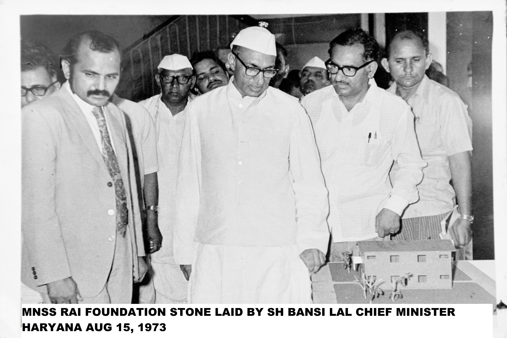
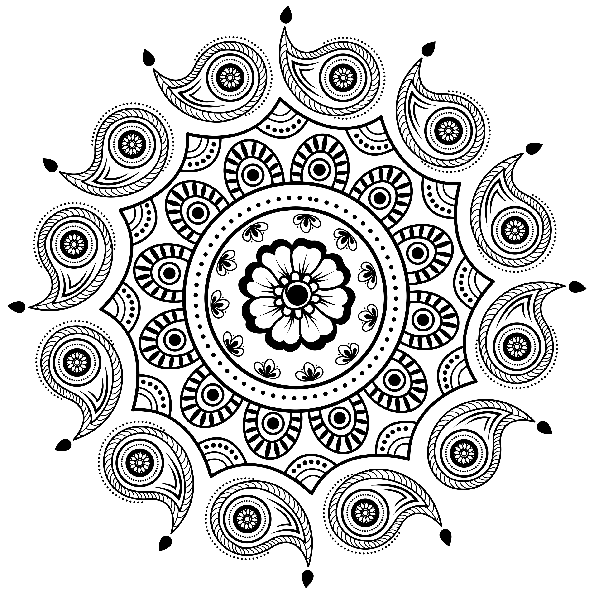
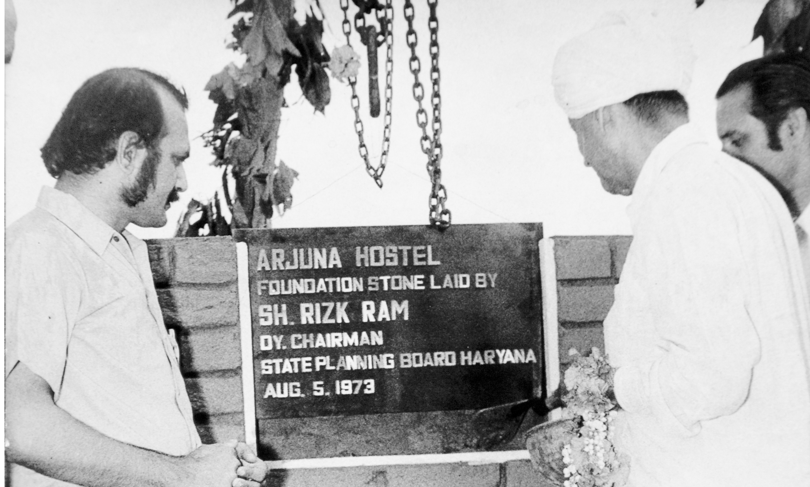

Principal's Desk
History
Art Gallery
Articles
Achievements
Principal's Desk
History
Art Gallery
Articles
Achievements
Founded in 1973, our school was established with the visionary aim of Mr. Bansilal to nurture brilliant stars. Over the years, we have strived to fulfill this vision, providing a platform for students to shine. With each passing year, our school has grown and evolved, empowering young minds to reach their full potential. Today, we stand proud as a beacon of excellence, with a legacy spanning five decades.
The First Meeting 19th February 1973
AGENDA : No formal agenda was circulated and various preliminary items were discussed with the permission of the Chairman.
MINUTES : of the meeting of the Special Board for Sports School, Rai, held on 19th February, 1973 at 3.00 P.M. in the office room of Commissioner for Sports, Haryana, at Chandigarh.
(1) It was decided that the School should be known as the Motilal Nehru
School of Sports.
(2) In a note put up to the Board for consideration it had been
suggested that the school should conduct a three year course from Class IX to XI.
The Principal felt that it would be more useful to have a 5-year course
instead, starting from Class VII. It was better to admit boys at a younger
age. The suggestion was unanimously accepted and it was decided that The Principal would draw up a detailed scheme indicating the requirements for
admission fees, scholarships, pay-scales of teachers etc.
(3) It was further decided that the school should start functioning
the necessary advertisements in the press and calling the boys for interview
from April this year and admissions to Class VII should be made after issuing
(4) The Chairman informed the Board that he had been approached by
Bhim Singh was an Arjuna Award winner and had also represented India in
one Bhim Singh of 5, Jat Regiment for Athletic Coach in the School. As Shri
the World Olympics and Asian Games it was felt that he might be a good
choice. It was, however, decided that before taking further action, the Princi-
pal would check up on his particulars from the Army authorities after which,
if necessary, he could be called up for interview.
(5) The progress regarding the construction work and the purchase of
equipment etc. for the Campus was reviewed and found to be satisfactory.
(6) It was decided to have the next meeting of the Board on 21st
February, 1973 at Chandigarh.
February, 1973 at Chandigarh.
Sd/-
Chairman
19-2-1973.
The aim of the school was to provide an opportunity for the students to shoulder responsibility as they grow up and also excel in games. Towards this end, the students will be given sound academic instruction up to the Higher Secondary level. However, special emphasis will be given to games, sports, and athletics. Scientific training will be imparted by qualified coaches. Modern equipment, sports gear, and facilities will be provided for the purpose. Vocational training will form an integral part of education, and special emphasis will be given to this aspect to enable the students to select their careers after passing out from the school. It is intended that admission in each class should be limited to 100 students, and therefore, accommodation and other facilities are being planned based on that criterion.
Things Discussed in further Meetings ..
Admission of boys
Out of 39 boys selected in the first batch only 27 joined on July 1, 1973. Subsequently 43 boys and 2 boys in the second and third batches respectively were admitted to the School. The School has on its roll 72 boys and amongst these four belong to Scheduled Caste. As regards income group, 37 boys belong to parents/guardians whose total monthly income is emoluments than Rs. 500, 24 boys belong to parents/guardians whose monthly income is between Rs. 500 and 1,000 and 11 belong to parents/guardians whose total monthly emolu ments exceed Rs. 1,000. The State-wise dis tribution of boys is: Haryana 58, Punjab 1, Delhi 1, Madhya Pradesh 1, Rajasthan 1. Total 72.
Staff
All the six Assistant Masters sanctioned for the current academic year were in position by 27th August, 73. One of the Assistant Masters, however, resigned on 28th August, 1973 on personal grounds. Therefore, one post of Assistant Master (Social Studies) is lying vacant. Sports Department, Haryana has been requested to arrange substitute from State Education Department.
Visit of VIPs to the School
(a) Honourable Chaudhri Bansi Lal, Chief Minister of Haryana, visited the School on August 15, 1973. He hoisted the National Flag and inspected the parade. Later he laid the foundation stone of the School Building and lunched in the Boy's Mess.
(b) Ch. Rizk Ram, Deputy Chairman, State Planning Board laid the foundation stone of Arjuna Hostel on August 5, 1973.
